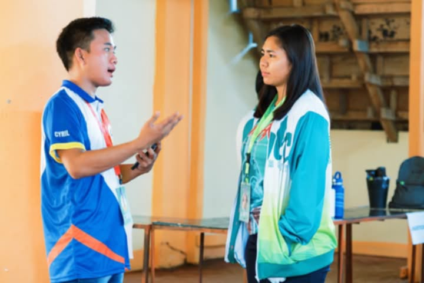
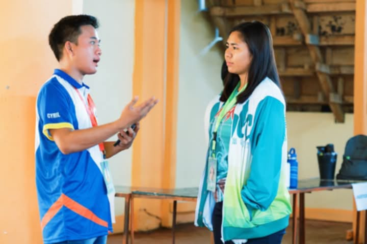
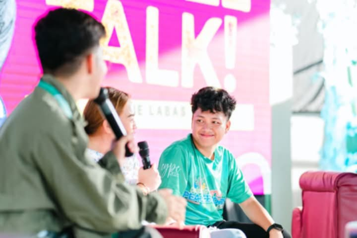
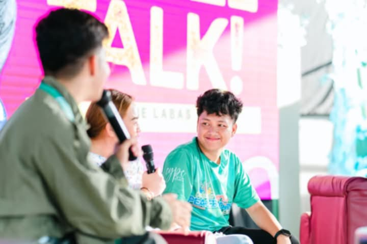
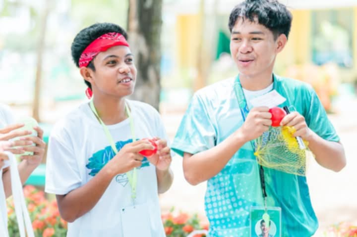
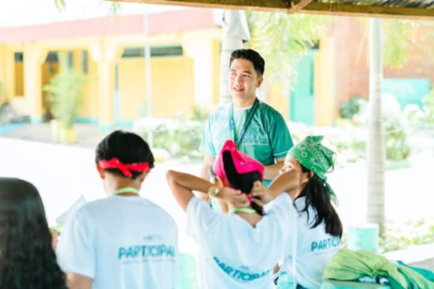
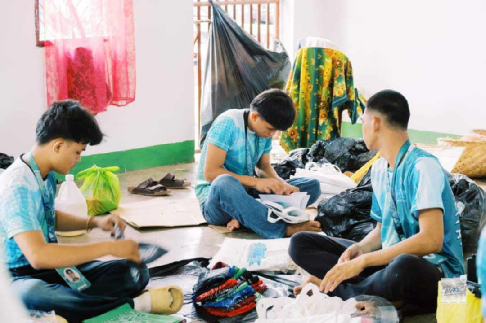
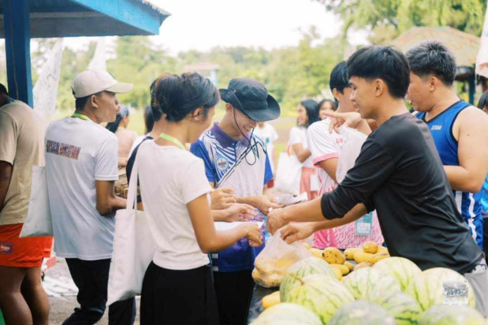
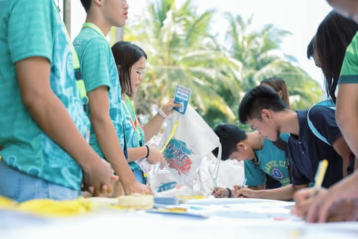

Camp Directors
Camp director is a leadership role responsible for overseeing the planning, execution, and management of a camp program. Their primary goal is to ensure the safety, success, and enjoyment of campers and staff while maintaining alignment with the camp's mission and values.
 


Key Roles of Camp Director
Program Planning and Implementation
Staff Management
Safety and Compliance
Public Relation
Administer
Camp Managers
Camp Director plays a vital leadership role in planning, organizing, and overseeing a camp program to ensure its success. The specific responsibilities may vary depending on the type and purpose of the camp.

 

Key Roles of Camp Director
Planning and Preparation
Communication and Public Relation
Evaluation and Improvements
Mentors
Mentors or Core Facilitators play a critical role in guiding, supporting, and empowering individuals to grow personally and professionally. Their responsibilities often depend on the context, such as education, career development, or personal growth.


Key Roles of Mentors or Core Facilitator
Empowerment and Advocacy
Role Modeling
Guidance and Support
Knowledge Sharing
Networking and Opportunities
Facilitator
The Facilitator plays a crucial role in guiding a group or individual through a process, activity, or discussion to ensure its goals are achieved effectively and efficiently. They act as a neutral party, helping participants collaborate, share ideas, and reach outcomes without imposing their own opinions.


Key Roles of Facilitator
Planning and Preparation
Creating a Safe and Inclusive Environment
Guiding Discussions and Activities
Encouraging Participation
Rapporteurs
A rapporteur is responsible for documenting and reporting the key points, discussions, and outcomes of a meeting, conference, or event. Their role ensures that an accurate and comprehensive record is maintained for future reference or action.


Documenting Discussions
Key Roles of rapporteur
Documenting Discussions
Ensuring Accountability
Attending and Observing
Logistics
The logistics team plays a critical role in ensuring the smooth planning, execution, and coordination of activities, resources, and operations for an event, project, or program. Their responsibilities span across several key areas to ensure everything runs efficiently and effectively.


Planning and Coordination
Key Roles of Logistic
Planning and Coordination
Procurement and Resource Management
Venue and Setup Management
Budget Management
Post-Event Wrap-Up
Secretariats
The secretariat plays a vital administrative and coordination role in supporting the smooth operation of an organization, event, or project. They ensure proper communication, documentation, and logistical arrangements, acting as the backbone of the organizational process.



Documentation and Record-Keeping